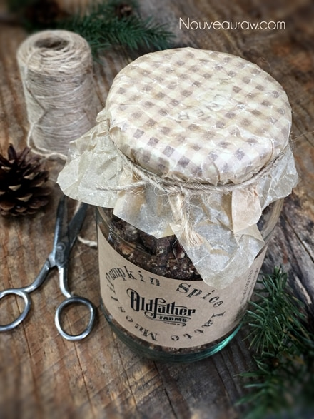

Pumpkin Spice Latte Muesli

~ raw, vegan, gluten-free ~
Warning: this muesli contains caffeine. Perhaps this recipe is to be enjoyed as a treat and not an everyday occurrence. Actually, I am working on rotating food by not eating the same thing week after week, let alone day after day. It’s not easy; I am a creature of habit. In fact, the more repetitive things are, the more I enjoy them… and I am not just referring to food.
Several years ago, Bob asked me to take an art welding class with him. It was a full semester commitment, but I was ready and willing. Unfortunately, within just a few weeks of the class starting, he had to drop out due to an eye issue. But, I put on my Dicki overalls, slapped on my welding mask, and pressed forward.
I learned how to TIG weld (tungsten inert gas welding), MIG (gas metal arc welding), stick welding (shielded metal arc welding), and oxy-acetylene (gas) welding. For hours, I stood in my welding-cubby and practiced my welding beads over and over and over and over again, on both aluminum and steel. And when I say “over and over”… I mean over and over. No, really… OVER and OVER. hehe
Most of the students moved on to building things, but I didn’t see the point until I mastered each and every technique. Most of the art that the students were creating was ending up in the metal heap pile to be reused because their projects didn’t hold together. Because of this, it inspired me to stay in my own little beading world.
One day, our teacher, Tom, tapped me on the shoulder as I was creating lines of beads on a piece of aluminum. I turned, lifted my mask, and gave him my full attention. He told me that I could move onto the next lesson that I could do other fun things. I said that I was having fun, and I was content with continuing making rows of beads. And if I hadn’t learned to make those perfectly, why move on? If you are unfamiliar with what a welding bead is, you use a filler material to bond metal together. Click (here) if you REALLY want to know what this looks like.
Well, that trip down memory lane got us off track, didn’t it. You are here to learn recipes not to hear about my crazy little welding adventure. :) I feel quite strongly (been lifting weights) that you will enjoy this recipe. Please leave a comment below; you know that I love hearing from you. Blessings, amie sue
Yields 5 cups
Dry Ingredients:
- 3 1/2 cups rolled, gluten-free oats, soaked
- 1 cup raw pecans, soaked
- 1 cup dried cranberries
- 1/2 cups raisins
- 1/4 cup chia seeds
Wet Ingredients:
- 3/4 cup pumpkin puree, raw or canned
- 1/3 cup raw coconut crystals
- 1/4 cup raw applesauce
- 1/4 cup maple syrup
- 2 Tbsp raw cacao powder
- 1 Tbsp cold-pressed olive oil
- 1 Tbsp lemon juice
- 1 Tbsp pumpkin pie spice
- 1 Tbsp instant espresso coffee
- 1 tsp vanilla extract
- 1 tsp liquid NuNaturals stevia
- 1 tsp ground Ceylon cinnamon
- 1/2 tsp Himalayan pink salt
Preparation:
- After soaking the oats, drain and discard the soak water. Rinse until the water starts to run clear.
- Drain and discard the soak water from the pecans and give them a final rinse before adding to the bowl.
- In a large bowl, combine the oats, pecans, cranberries, raisins, and chia seeds. Set aside.
- In a small bowl, combine the pumpkin puree, coconut crystals, applesauce, sweetener, cacao powder, oil, lemon juice, pumpkin spice, instant Espresso, vanilla, stevia, cinnamon, and salt. Mix well.
- You can do this in a food processor if you feel like cleaning all of that. :)
- To make your own Pumpkin Spice blend, combine the following in a jar and shake 4 tsp ground cinnamon, 2 tsp ground ginger, 1 tsp Allspice, and 1 tsp nutmeg.
- Pour the wet ingredients over the “dry” ingredients and mix well. Let it rest for 10 minutes to activate the chia seeds, which will thicken the batter.
- Spread the batter on the non-stick sheet that comes with the dehydrator. If you don’t have that, use parchment paper.
- Dry at 145 degrees (F) for 1 hour, reduce to 115 degrees (F) and continue to dry for 8-10 hours or until the desired dryness/moisture is achieved.
- Halfway through, transfer to the mesh sheet to speed up the dry time.
- Dry times will always vary depending on the climate, humidity, model of the machine, and how full it is.
- Allow to cool, then place the dried batter in the food processor fitted with the “S” blade. You might want to do this in stages, so you don’t turn part to powder and part chunky.
- Store in an airtight container.
- Enjoy with your favorite nut milk, coconut milk, or yogurt. Tastes great eating right away or soaked from 30 minutes to overnight.
The Institute of Culinary Ingredients™
- To learn more about maple syrup by clicking (here).
- Click (here) for my thoughts on raw agave nectar.
- Why do I specify Ceylon cinnamon? Click (here) to learn why.
- What is Himalayan pink salt, and does it matter? Click (here) to read more about it.
- Are oats gluten-free? Yes, read more about that (here).
- Are oats raw? Yes, they can be found. Click (here) to learn more.
- Do I need to soak and dehydrate oats? Not required but recommended. Click (here) to see why.
Culinary Explanations:
- Why do I start the dehydrator at 145 degrees (F)? Click (here) to learn the reason behind this.
- When working with fresh ingredients, it is essential to taste test as you build a recipe. Learn why (here).

© AmieSue.com